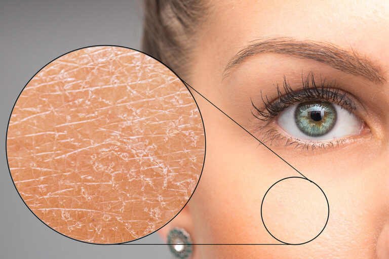

Cilt bakımında doğru bildiğimiz yanlışları geride bıraktığımıza göre, artık cildimizle barışma ve ona hak ettiği özeni gösterme vakti geldi. Ancak tam bu noktada unutmamamız gereken altın bir kural var: Kozmetik dünyasında 'herkese uyan tek bir mucize' yoktur. Yakın bir arkadaşınızın cildini pürüzsüz yapan o popüler krem, sizin cildinizde tahrişe veya sivilcelenmeye yol açabilir. Çünkü hepimizin cildi, tıpkı parmak izimiz gibi benzersizdir ve kendi dilinden konuşulmasını bekler. Kuru, yağlı, karma, hassas veya normal... Cildinizin tipini bilmek, onun aslında neye aç olduğunu ve hangi içeriklerle beslenmesi gerektiğini anlamanın en güvenilir yoludur. Şimdi cildinizin sesine kulak verin ve dermatolojik standartlara göre hazırladığımız, her cilt tipinin kendine özgü ihtiyaçlarına nokta atışıyla cevap veren bu temel bakım rutinlerini keşfedin:

Amaç cildi soymadan temizlemek ve zayıflamış bariyeri güçlendirerek nemi cilde hapsetmektir.
Sabah:Sadece suyla veya çok nazik, köpürmeyen bir temizleyiciyle yıkama - Hyalüronik asit serumu (cilt hafif nemliyken sürülmeli) - Seramid içeren yoğun bir nemlendirici - Güneş kremi.Amaç sebum (yağ) üretimini dengelemek ve gözenekleri açık tutmaktır; cildi kurutup nemsiz bırakmak değil.
Sabah: Salisilik asit (BHA) içeren köpük/jel temizleyici - Niasinamid (B3 vitamini) serumu (yağ dengesi ve gözenek görünümü için) - Su bazlı, yağsız (oil-free) nemlendirici - Matlaştırıcı, su bazlı güneş kremi..jpg)
Amaç farklı ihtiyaçları olan bölgeleri dengelemektir.
Sabah:Nazik bir jel temizleyici - Tüm yüze hafif bir antioksidan serum (C vitamini vb.) - T-bölgesine (alın, burun, çene) çok ince bir tabaka, yanaklara daha yoğun nemlendirici - Güneş kremi..jpg)
Amaç cilt bariyerini onarmak, yatıştırmak ve olabildiğince az içerik kullanmaktır. Parfüm, kurutucu alkol ve sert granüllerden kesinlikle uzak durulmalıdır.
Sabah:Sadece suyla yıkama - Centella Asiatica (Cica) veya Aloe Vera özlü yatıştırıcı serum - Bariyer onarıcı yatıştırıcı krem - Mineral filtreli güneş kremi (kimyasal filtreler hassasiyet yapabilir)..jpg)
Amaç mevcut sağlığı, nem dengesini korumak ve yaşlanma belirtilerini geciktirmektir.
Sabah:Nazik bir jel temizleyici - C vitamini serumu (aydınlık ve eşit bir cilt tonu için) - Hafif yapılı bir nemlendirici - Güneş kremi.